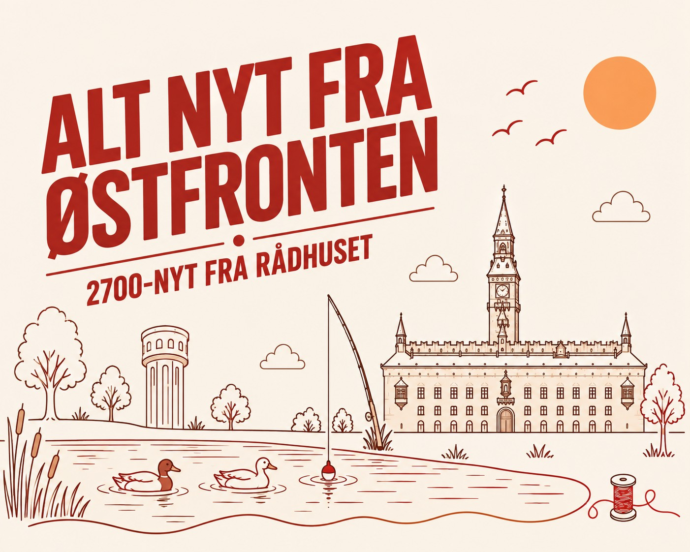

Fra djøf'sk til dansk – 2700-nyt fra Rådhuset
Vi har kigget på, hvad der er sket på Rådhuset siden sidste onsdag, og hvad der er på vej i den kommende uge.
Planer for Tingbjerg Stadion
Status: Vedtaget med budget 2027. Kultur-, Fritids- og Borgerserviceudvalget godkender fordelingen af pengene torsdag 22. oktober.
Der er afsat 2.585.000 kr. til at planlægge en opgradering af Tingbjerg Stadion. Pengene går til planlægningen. Selve ombygningen er ikke betalt, og det står ikke i sagen, hvornår eller hvordan den skal betales.
I kommunens tabel hedder posten "Planlægningsbevilling til opgradering af Tingbjerg Stadion (Scenarie 2)".
Læs sagen · Læs bilagetHusumparken får hegn og lys
Status: Vedtaget med budget 2027. Udvalget godkender fordelingen torsdag 22. oktober.
Husumparken får 647.000 kr. til et større areal, nyt hegn og lys til sport. Ifølge kommunens tabel er der også penge til projektet i 2026.
Her er pengene til at lave noget, ikke kun til at planlægge det.
Læs sagen · Læs bilagetPlan for Tingbjerg og Husum Nord: 20 høringssvar, 0 ændringer
Status: I proces. Børne- og Ungdomsudvalget giver sit svar onsdag 21. oktober. Derefter Klima-, Miljø- og Teknikudvalget 23. november, Økonomiudvalget 8. december og Borgerrepræsentationen 17. december.
Kommunens handleplan for udsatte byområder 2027–2028 gælder bl.a. Tingbjerg/Utterslevhuse og Husum Nord. Der kom 20 høringssvar, heraf 9 om børne- og ungeområdet, bl.a. fra Brønshøj-Husum Lokaludvalg.
Forvaltningen har svaret i en hvidbog og vurderer, at høringssvarene ikke giver anledning til ændringer i planen. Børne- og Ungdomsudvalget lægger op til at støtte planen, men vil have mere inddragelse af børn og unge.
Læs sagen30 timers pasning i hver fjerde institution
Status: I proces. Børne- og Ungdomsudvalget drøfter modellen onsdag 21. oktober og beslutter model og institutioner 18. november.
Med budget 2027 skal hver fjerde daginstitution i kommunen tilbyde en plads på 30 timer om ugen med lavere forældrebetaling. Institutionen får stadig penge som til en fuldtidsplads. Der er afsat 4,2 mio. kr. om året i 2027–2030. Alle forældre i de deltagende institutioner kan vælge ordningen uden at dokumentere et behov.
Ubrugte timer kan ikke overføres til andre dage eller uger, og ferie og sygdom giver ikke ret til erstatningstimer. Kommunen tæller ikke minutter og kontrollerer ikke centralt, hvor længe børnene er der. Institutionerne skal spredes over hele byen. Det er ikke afgjort, om nogen af dem ligger i 2700.
Læs sagenToiletter i Bellahøj rykkes til 2027
Status: I proces. Kultur-, Fritids- og Borgerserviceudvalget behandler sagen torsdag 22. oktober, Økonomiudvalget 27. oktober og Borgerrepræsentationen 5. november.
En forbedring af toiletterne i et kultur- og fritidsanlæg i Bellahøj er forsinket og flyttes fra 2026 til 2027. Bilaget siger ikke, hvilket anlæg det er.
Ifølge sagen planlægger forvaltningen bevidst flere anlægsprojekter, end der er penge til i år, fordi den regner med, at nogle bliver forsinket. Det kaldes en overdisponering. Forvaltningens ramme er 55,6 mio. kr., og overdisponeringen er nu nedskrevet fra 49,2 mio. kr. til 24,6 mio. kr. Forsinkelserne beskrives som naturlige tidsforskydninger, ikke som prioriteringer.
Læs sagen · Læs bilaget2,7 mio. kr. flyttes til pladsprisen
Status: I proces. Børne- og Ungdomsudvalget onsdag 21. oktober, derefter Økonomiudvalget og Borgerrepræsentationen.
2,7 mio. kr. fra budget 2026 var afsat til at genindføre længere åbent om eftermiddagen og weekendåbent i daginstitutioner. Forvaltningen fandt ingen klar efterspørgsel og foreslår i stedet at fordele pengene på alle almene daginstitutioner.
4 af de 10 institutioner med udvidet åbningstid ligger i område Nord. Sagen siger ikke hvilke bydele.
Læs sagenVi følger: Natfodbold og fritidsjob i Tingbjerg
Referatet om natfodbold i Tingbjerg og fritidsjob i Tingbjerg-Husum fra udvalgsmødet 19. oktober er ikke offentliggjort endnu.
Læs dagsordenenVi holder øje med Rådhuset, så du ikke behøver.